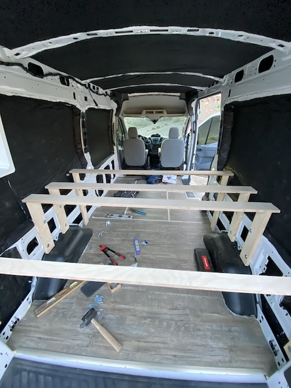
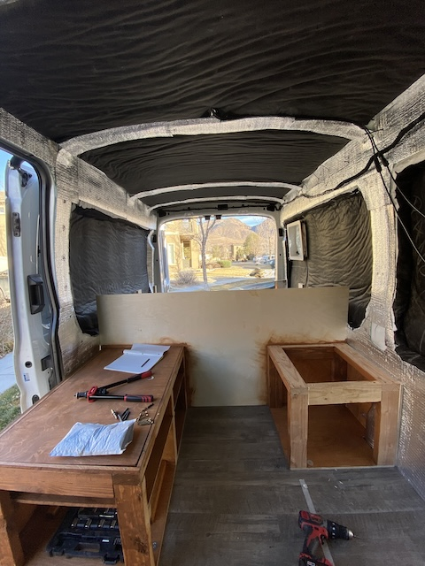
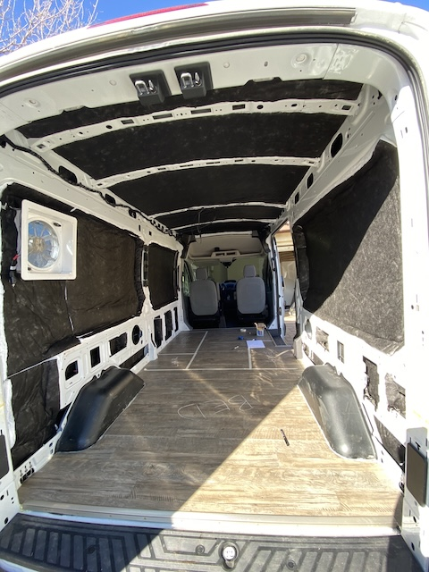
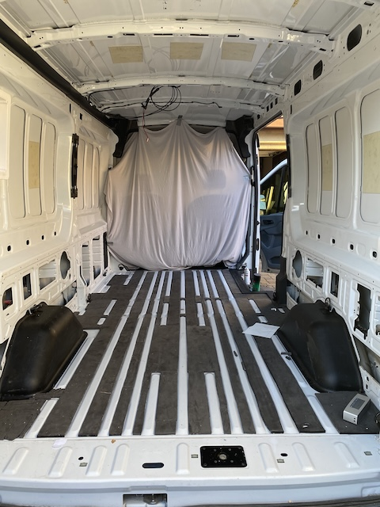
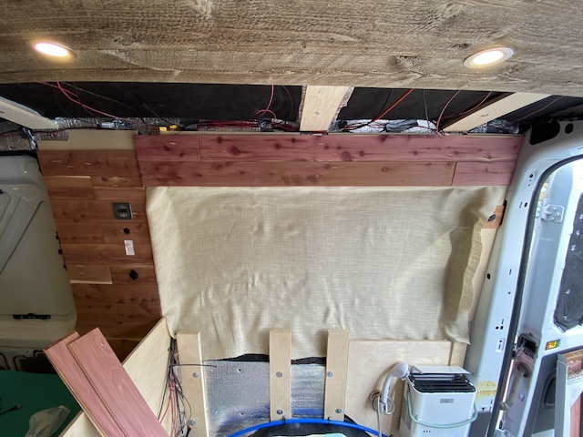
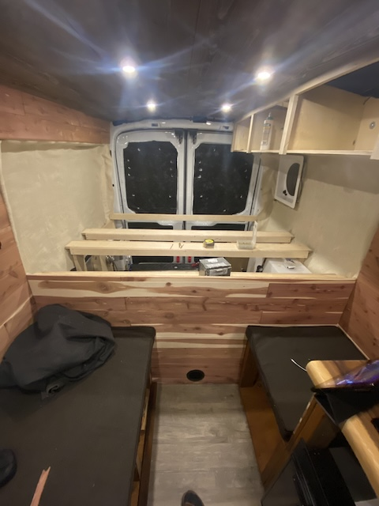
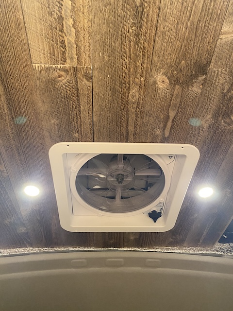
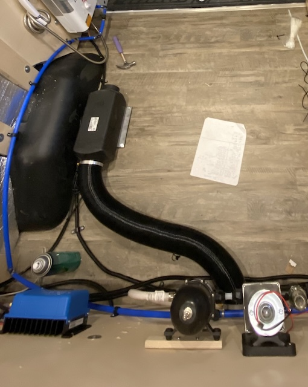
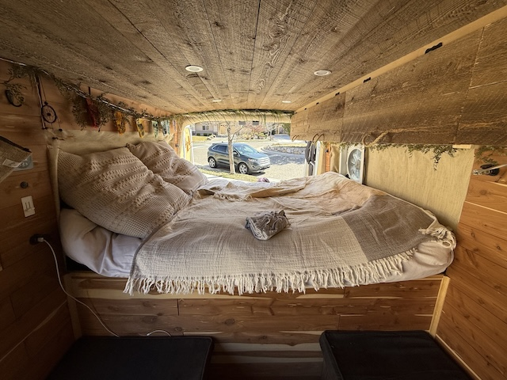
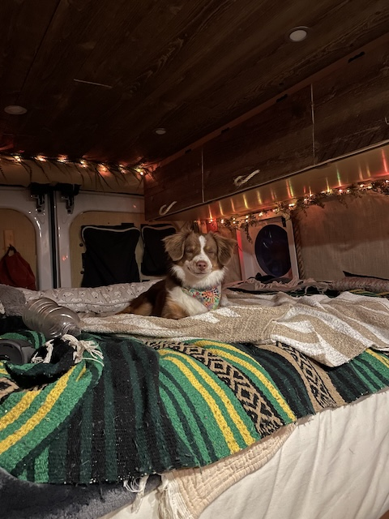

Design
The design phase focused on comfort, warmth, and functionality. Every choice from materials to layout was made to make the van feel like a true home. I planned the layout to maximize storage, airflow, and insulation while keeping a natural, cozy aesthetic.
Design Elements
| Feature | Details | Purpose |
|---|---|---|
| Overhead Cabinets | Used for clothing and pantry items | Maximizes space along ceiling |
| Raised Bed Frame | No center supports | Opens up full under-bed storage area |
| Insulation | Foam board under floor laminate, wool in walls and roof | Keeps van warm in winter and cool in summer |
| Burlap Headboard | Behind bed area | Soft texture instead of wood near head and feet |
| Fans and Heater | Two MaxxAir fans and heater connected to gas tank | Airflow and warmth for year-round use |
Smart Storage Design
Every inch of space in the van is designed to be useful. The benches, bed frame, and sink base all have built-in storage compartments. The bed design avoids center supports to allow large gear like bins, camping equipment, tools and the water tank to slide underneath easily.
 Insulation
I insulated the walls, ceiling, and floor using a mix of foam board and natural wool insulation. It keeps the interior temperature stable and reduces noise from outside. The floor is layered with foam underlayment, wood, and then laminate for durability.
 Interior Textures & Materials
Behind the bed, I added a burlap wall panel to make the sleeping area softer and more comfortable. The neutral color palette, natural fabrics, and warm wood tones all work together to make the space feel calm and inviting.
 Climate Control
Two MaxxAir fans — one near the bed and one in the kitchen — provide circulation while cooking or sleeping. The gas heater connects directly to the van’s fuel tank, keeping the interior warm even on winter nights.
 Final Setup
The end result is a bright, cozy, and functional living space that feels much larger than it is.
 